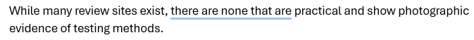

Problem Statement
While many review sites exist, there are none that are practical and show photographic evidence of testing methods.
Affinity Diagram

My affinity diagram contains 5 categories: Amenities and Comfort, Screen and Sound Quality, Pricing and Discounts, Movie Selection and Showtimes, and Location and Atmosphere. Each category contains 4 ideas, totalling to 20 ideas overal. The process of creating the diagram allowed me to brain storm and bring my final project into focus.
Sketches
These six images were generated by Canva AI. Three are of an app and three are of a wesite. They represent a place where users can go to look at detailed reviews of local Columbia, SC movie theaters. They can look at text and video reviews, and there are links to Google reviews and maps for each theater.
Prototype
This is a presentation of the prototype of my app where users can go to easily lookup detailed reviews of local movie theaters, so that they can choose the best theater to view their anticipated movie.